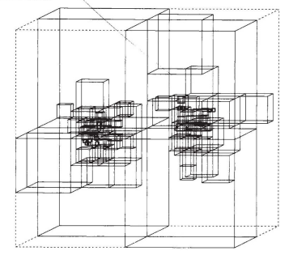
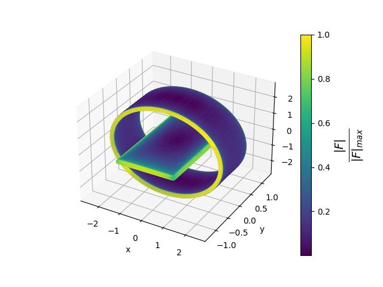

Using the Barnes-Hut algorithm to model Coulomb interactions between particles
Introduction
In this post we will be implementing an algorithm to model Coulomb interactions between particles using the Barnes-Hut algorithm. A problem where interactions in a dynamical system of particles simulated is called a N-body problem. As the the number of particles in the system rises the problem gets increasingly harder. Computation of the problem using brute force has a time complexity of $ O(N^2) $. In their 1986 paper Josh Barnes and Piet Hut introduced a new approach to solving the problem in $O(N\log{N})$ time.
The core idea of the alogrithm is to divide the space into subcells. The space containing the particles starts off as one cell. The cells that contain more than one particle are recursively divided into smaller subcells until all the cells contain only one particle. Cells with no particles in them are discarded. The construction of $N$ particles can be done in $O(N\log{N})$ time. After the construction of the cell structure we end up with a structure similar to the one presented in the paper:
Once the octree structure has been constructed the charges contained by each cell as well as its center of charge is calculated in $O(N\log{N})$ time for $N$ particles. After the charge distribution calculations the Coulomb force exerted by the particles in the octree on the given particle can be calculated. Calculating the Coulomb interactions between $N$ particles can be done in $O(N\log{N})$ time.
Example of the force distribution:
Let us now implement the algorithm.
Auxiliary data structures
To help implement the algorithm we implement the Vector and Particle data structures. Let us first implement the Vector structure and the vector calculation functions the Barnes-Hut algorithm needs. It has three fields corresponding to the $x, y$ and $ z $ components of the vector. In vector.rs:
#[derive(Debug, Clone)]
pub struct Vector {
pub x: f64,
pub y: f64,
pub z: f64,
}
impl Vector {
pub fn magnitude(&self) -> f64 {
return self.x*self.x+self.y*self.y+self.z+self.z;
}
pub fn distance(&self, pt: &Vector) -> f64 {
return f64::sqrt((self.x-pt.x)*(self.x-pt.x) +
(self.y-pt.y)*(self.y-pt.y)+(self.z-pt.z)*(self.z-pt.z));
}
pub fn distance_vector(&self, pt: &Vector) -> Vector {
return Vector {
x: self.x-pt.x,
y: self.y-pt.y,
z: self.z-pt.z
};
}
pub fn scalar_multiplication(&self, scalar: f64) -> Vector {
return Vector {
x: scalar*self.x,
y: scalar*self.y,
z: scalar*self.z
}
}
pub fn add(&self, pt: &Vector) -> Vector {
return Vector {
x: self.x+pt.x,
y: self.y+pt.y,
z: self.z+pt.z
}
}
pub fn new(x: f64, y: f64, z: f64) -> Vector {
return Vector {x, y, z};
}
}The Particle data structure has two fields: position and charge. In particle.rs:
use super::vector::Vector;
#[derive(Debug, Clone)]
pub struct Particle {
pub position: Vector,
pub charge: f64,
}
impl Particle {
pub fn new(x: f64, y: f64, z: f64, q: f64) -> Particle {
return Particle {
position: Vector::new(x, y, z),
charge: q
}
}
}Implementing the octree data structure
For the algorithm a octree data structure Cell needs to be implemented. An instance of the octree (Cell) will have 7 fields:
children: Subcells of the cell.particle: Contains the particle of the cell if the cell only holds one particle,Noneotherwise.base: Position of cell's base.center_of_charge: Cell's center of charge.charge: Total charge contained in the cell.count: Number of particles in the cell.length: Length of the cell's edge.
In octree.rs:
use super::particle::Particle;
use super::vector::Vector;
const K: f64 = 8.988;
#[derive(Debug, Clone)]
pub struct Cell {
children: Vec,
particle: Option,
base: Vector,
center_of_charge: Vector
charge: f64,
count: f64,
length: f64,
}
impl Cell {
pub fn new(length:f64, base: Vector) -> Cell {
return Cell {
children: Vec::| ::new(),
particle: None,
count: 0.0,
length: length,
base: base,
charge: 0.0,
center_of_charge: Vector::new(0.0, 0.0, 0.0)
}
}
} | | Functions related to the Barnes-Hut algorithm need to be implemented for the data structure. Let us first implement a function for checking whether a particle is inside the cell. In octree.rs:
//...
impl Cell {
//...
pub fn is_inside(&self, pt: &Vector) -> bool {
if self.base.x <= pt.x && self.base.x+self.length > pt.x
&& self.base.y <= pt.y && self.base.y+self.length > pt.y
&& self.base.z <= pt.z && self.base.z+self.length > pt.z {
return true;
}
return false;
}
}Next we implement a recursive function for adding a particle to the cell. If the cell's current particle count is zero the new particle is added to the cell. If there is already a one partcile in the cell it is divided into eight subcells. The original and the new particle are then passed on to the subcells. If there is more than one particle already in the cell the particle is directly passed on to the cell's children. We also implement a function that takes a set of particles and loads the particles into the octree. A octree containing $N$ particles can be constructed in a time of $O(N\log{N})$. In octree.rs:
//...
impl Cell {
//...
pub fn create_subcells(&mut self) {
self.children.push(Cell::new(self.length/2.0,
Vector::new(
self.base.x,
self.base.y,
self.base.z)));
self.children.push(Cell::new(self.length/2.0,
Vector::new(
self.base.x,
self.base.y,
self.base.z+self.length/2.0)));
self.children.push(Cell::new(self.length/2.0,
Vector::new(
self.base.x,
self.base.y+self.length/2.0,
self.base.z)));
self.children.push(Cell::new(self.length/2.0,
Vector::new(
self.base.x+self.length/2.0,
self.base.y,
self.base.z)));
self.children.push(Cell::new(self.length/2.0,
Vector::new(
self.base.x,
self.base.y+self.length/2.0,
self.base.z+self.length/2.0)));
self.children.push(Cell::new(self.length/2.0,
Vector::new(
self.base.x+self.length/2.0,
self.base.y,
self.base.z+self.length/2.0)));
self.children.push(Cell::new(self.length/2.0,
Vector::new(
self.base.x+self.length/2.0,
self.base.y+self.length/2.0,
self.base.z)));
self.children.push(Cell::new(self.length/2.0,
Vector::new(
self.base.x+self.length/2.0,
self.base.y+self.length/2.0,
self.base.z+self.length/2.0)));
}
pub fn insert_particle(&mut self, particle: &Particle) {
if self.count > 1.0 {
let subcell = self.children
.iter_mut()
.find(|c| c.is_inside(&particle.position));
match subcell {
Some(c) => {
c.insert_particle(particle);
},
None => (),
}
}
else if self.count == 1.0 {
self.create_subcells();
if let Some(p) = &self.particle {
let subcell_existing = self.children
.iter_mut()
.find(|c| c.is_inside(&p.position));
match subcell_existing {
Some(c) => {
c.insert_particle(&p);
},
None => (),
}
}
self.particle = None;
let subcell = self.children
.iter_mut()
.find(|c| c.is_inside(&particle.position));
match subcell {
Some(c) => {
c.insert_particle(particle);
},
None => (),
}
}
else if self.count == 0.0 {
self.particle = Some(particle.clone());
}
self.count += 1.0;
}
pub fn tree_construction(&mut self, particles: &Vec) {
for particle in particles.iter() {
self.insert_particle(particle);
}
}
} To calculate the charge distribution in $O(N\log{N})$ time we need to implement a recursive function that goes through each cell calculating the total charge contained by it. In octree.rs:
//...
impl Cell {
//...
pub fn calculate_charge_distribution(&mut self) {
if self.count == 0.0 {
return;
}
else if self.count == 1.0 {
match &self.particle {
Some(p) => {
self.center_of_charge = p.position.clone();
self.charge = p.charge;
},
None => return,
}
}
else {
for child in self.children.iter_mut() {
child.calculate_charge_distribution();
self.charge += child.charge;
self.center_of_charge = self.center_of_charge
.add(&child.center_of_charge
.scalar_multiplication(child.charge));
}
self.center_of_charge = self.center_of_charge
.scalar_multiplication(1.0/self.charge);
}
}
}Now that we have a function for constructing the octree as well as a function for calculating the charge distribution we can move on to calculating the Coulomb interaction
\[\begin{equation} \mathbf{F}_1=Kq_1q_2\frac{\mathbf{r}_1-\mathbf{r}_2}{|\mathbf{r}_1-\mathbf{r}_2|^3} \end{equation}\]between an inserted particle and the particles in the octree. The force calculation is done by starting from the root of the octree and recursively moving down the tree. If the cell has only one particle, the Coulomb interaction is calculated between the cell's particle and the inserted particle. Given an accuracy parameter $\theta$, current cell's edge length $l$ and the distance $D$ between the inserted particle and the current cell's center of charge, if $\frac{l}{D}<\theta$ the Coulomb interaction is calculated between the cell and the inserted particle. Otherwise the inserted particle is passed onto the cell's children. In `octree.rs`:
//...
impl Cell {
//...
pub fn calculate_coulomb_force(
&self,
particle: &Particle,
accuracy_parameter: f64
) -> Vector {
let r_magnitude = self.center_of_charge
.distance(&particle.position);
let mut force = Vector::new(0.0, 0.0, 0.0);
if r_magnitude == 0.0 || self.count == 0.0 {
return force;
}
else if self.count == 1.0 ||
self.length / r_magnitude < accuracy_parameter {
let distance = particle
.position
.distance_vector(&self.center_of_charge);
let scalar = self.charge*particle.charge *
K/(r_magnitude*r_magnitude*r_magnitude);
force = distance.scalar_multiplication(scalar);
return force;
}
else {
for child in self.children.iter() {
force = force.add(
&child
.calculate_coulomb_force(
particle,
accuracy_parameter));
}
return force;
}
}
}Let us finish the implementation of the Barnes-Hut algorithm by create a module to connect all the other files. In mod.rs:
mod octree;
mod particle;
mod vector;
pub use self::particle::Particle;
pub use self::vector::Vector;
pub use self::octree::Cell;Example code in ./main.rs` for using the algorithm when all the files above are located in ./barnes_hut/:
use std::time::Instant;
use std::fs::File;
use std::io::Write;
mod barnes_hut;
use barnes_hut::{Vector, Particle, Cell};
fn main() {
let base = Vector::new(-10.0, -10.0, -10.0);
let mut cell = Cell::new(20.0, base);
let mut particles = Vec::new();
let mut file = File::create("data.csv").unwrap();
writeln!(file, "x,y,z,F").unwrap();
let d = 2.5/200.0;
for i in 0..201 {
for j in 0..201 {
let fi = f64::from(i);
let fj = f64::from(j);
particles.push(Particle::new(fi*d-1.25, fj*d-1.25, 0.0, 1.0));
}
}
let now = Instant::now();
cell.tree_construction(&particles);
cell.calculate_charge_distribution();
for particle in particles.iter() {
let force = cell.calculate_coulomb_force(particle, 1.0);
writeln!(
file,
"{},{},{},{}",
particle.position.x,
particle.position.y,
particle.position.z,
force.magnitude()).unwrap();
}
let elapsed = now.elapsed();
println!("Time elapsed: {:?}", elapsed);
}